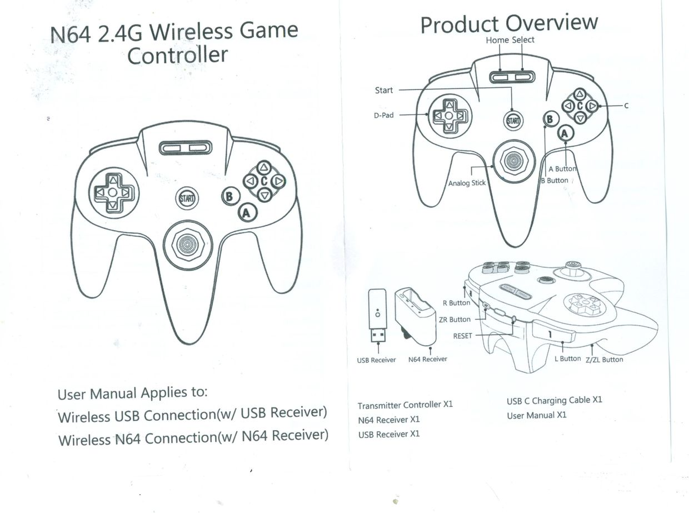
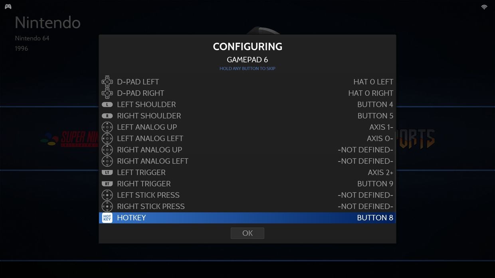

How to make a wireless N64 controller work on retropie (and similar)
This will only work if retroarch detects the Nintendo 64 controller as a Xbox 360 controller.
This is tested with batocera in mind but all these emulator systems use retroarch so they will be similar.
The Basic Idea is that you map the buttons on your N64 inspired controller (which retroarch thinks is an Xbox 360 controller) to a predefined configuration AND THEN map those pseudo xbox 360 buttons in the individual N64 emulators (mupens64plus and libretro:mupens64plus-Next)
The controller I have is currently (October 2023) readily found on ebay.
|  | |
| Enlarge | Enlarge |
I have no idea what the numbers in the table on the instruction pamphlet mean.
Instructions
My particular controller needs to be put in X-input mode for retroarch to detect it, to do this i hold "Start+B" for 3 seconds until two out of the four LEDS on the controller turn red. You might need to do this too.
Then: Go into the main menu, go to the controller settings area and select controller mapping and map to the following configuration:
| This is the settings for my controller: |
|  |
The number buttons may be different depending on your controller but as long as the right physical button location is mapped to the right pseudo xbox360 controller button it will be OK.
Once you have mapped the controller as above, go into the folder:
/userdata/system/configs/mupen64And replace the contents of input.xml with this (make a backup):
|
|
The non mupens64plus emulator should now be configured properly.
For the "libretro: libretro:mupens64plus-Next" emulator, open up the Nintendo 64 game list and select advanced options, change the emulator to "libretro:mupens64plus-Next" and then launch any game:
Once you have launched a game with the the libretro emulator, press the appropriate hotkey to get into the libretro menu system (for me it is "home+B").
And then navigate to "controls > port 1 Controls" and configure the controller to have the following buttons. Remember, retroarch thinks a xbox 360 controller is plugged in:
| This is what your pseudo xbox 360 controller should be mapped to: |
Once you have mapped these buttons, select "manage Remap file" and select "Save Core Remap File" to apply these settings to all games.
You may need to save it as a Game Remap file first and/or delete any existing map files:
Once you have done that, go back to the Nintendo game list, select "advanced option" and change the preferred emulator back to "auto". the controller should work as expected.